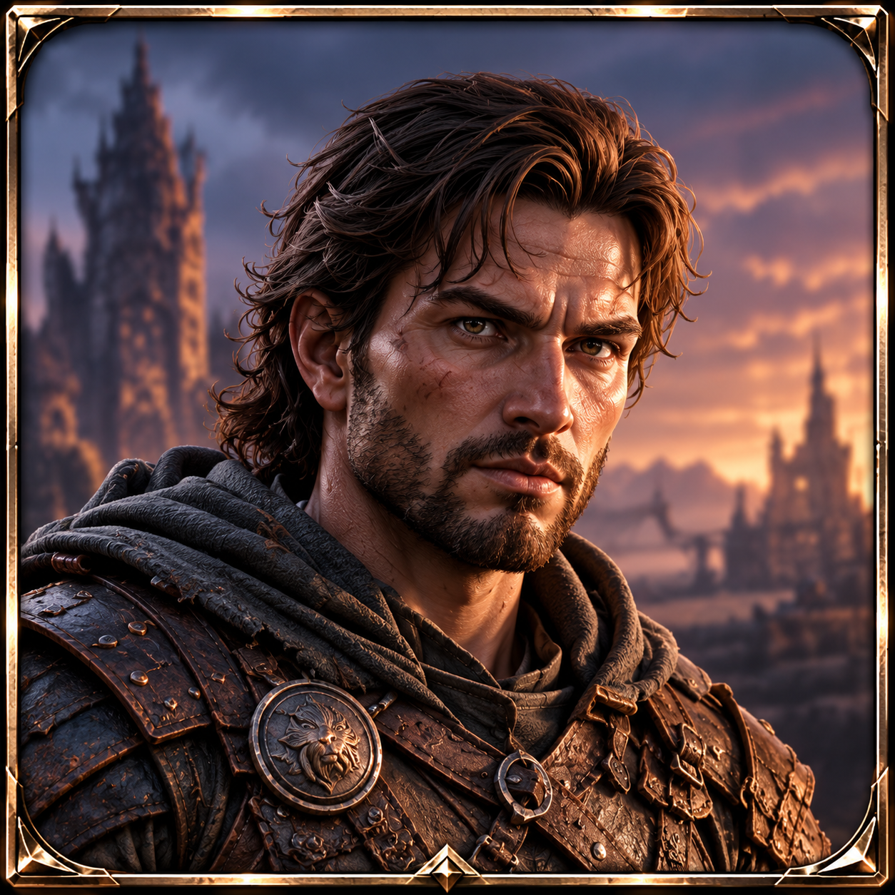

← RETOUR AU QUAIÉTAPE 1/3 ● ○ ○
CHOISIS TA RACE

● ●
1. RACE
Choisis la race de base de ton aventurier. Tu pourras ensuite modifier son apparence.

Choisis la race de base de ton aventurier. Tu pourras ensuite modifier son apparence.